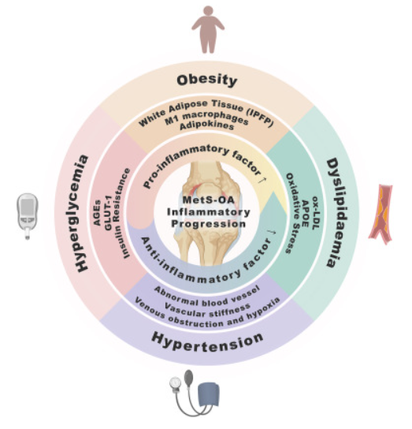

Protocole Expérimental : Force Musculaire (Dynamométrie & EMG) et Modélisation
Ce protocole se concentre sur la mesure directe de la force musculaire (Dynamométrie), de son activation neuromusculaire (EMG) et de la composition corporelle pour déterminer des indicateurs de risque d'arthrose plus précis que l'IMC seul.
1. Objectifs du Protocole
- **Quantifier la Force et l'Activation :** Mesurer la Force Isométrique Maximale Volontaire (MVC) des muscles extenseurs/fléchisseurs du genou et son activation par EMG.
- **Composition Corporelle :** Établir une base de données corrélant la force musculaire mesurée, le poids, et la masse musculaire (masse maigre).
- **Modéliser le Risque :** Développer et valider un modèle de simulation numérique de l'articulation du genou pour visualiser l'évolution de l'arthrose en fonction des paramètres de force et de composition corporelle.
2. Recrutement des Participants et Questionnaire
Groupes et Critères
**Population :** 60 adultes volontaires, idéalement 20 par groupe, appariés en âge et sexe.
Groupes d'IMC (OMS/CDC) :
- IMC Normal (18,5 – 24,9)
- Surpoids (25,0 – 29,9)
- Obésité (≥ 30,0) 
Critères d'Exclusion : Antécédents chirurgicaux récents, maladie articulaire inflammatoire, troubles neurologiques ou métaboliques non contrôlés.
Questionnaire Détaillé (Mesures Complémentaires)
- **Paramètres Anthropométriques :** Âge, poids, taille, nationalité, alignement des genoux (valgus, varus).
- **Historique Familial :** Arthrose dans la famille (frère, sœur).
- **Historique Poids :** Ancien obèse/maigre.
- **Facteurs de Risque :** Condition sportive actuelle, niveau d'activité physique.
- **Évaluation Articulaire :** Si possible, examen clinique de l’arthrose (score WOMAC) et stade radiographique (Kellgren & Lawrence).
3. Phase 1 : Mesures de Force Musculaire (Dynamométrie & EMG)
A. Mesure de la Force Isométrique Maximale (Dynamométrie)
La Force Musculaire Maximale Volontaire (MVC) des muscles extenseurs et fléchisseurs du genou sera mesurée à l'aide d'un dynamomètre isométrique, en respectant les angles articulaires optimaux selon la littérature :
-
**Quadriceps (Extenseurs) :** Mesure à **60° de flexion du
genou**.
Référence : Rassier, D. E., & Herzog, W. (1999). Force production following stretch in a single skeletal muscle fiber. Voir la source (Rassier & Herzog, 1999) -
**Ischio-jambiers (Fléchisseurs) :** Mesure à **30° de flexion du
genou**.
Référence : Onishi, H. et al. (2002). EMG-angle relationship of the hamstring muscles during maximum isometric contraction at hip and knee joint angles. Voir la source (Onishi et al., 2002) - Plusieurs essais seront réalisés pour obtenir une mesure fiable.
B. Intégration de l'Électromyographie (EMG)
L'EMG de surface sera utilisé pour évaluer l'efficacité de l'activation neuromusculaire des muscles du bas du corps :
- **Muscles Visés :** Quadriceps et Triceps Sural (Mollet).
- **Objectif :** Mesurer l'amplitude du signal EMG normalisé lors d'un effort maximal pour quantifier l'activation et détecter d'éventuels déficits neuromusculaires.
![[Image de Dynamomètre isométrique avec placement d'électrodes EMG sur le genou/mollet]](placeholder_dynamo_emg.jpg)
4. Phase 2 : Composition Corporelle
Évaluation de la **Masse Maigre (LBM)** pour déterminer si un poids corporel élevé est dû à la masse musculaire (potentiellement protectrice) ou à la masse grasse (inflammatoire et chargée).
- Utilisation d'une **pince calibrée (adipomètre)** pour mesurer l'épaisseur du pli graisseux sous-cutané à plusieurs endroits spécifiques.
- Calcul de la masse grasse et de la masse maigre grâce à des équations basées sur ces données anthropométriques (Alternative : Impédancemétrie).
5. Analyse des Données et Modélisation Numérique
Analyses Statistiques
- **Comparaison de Groupes :** ANOVA ou MANOVA pour comparer les groupes d'IMC sur les paramètres de Force, EMG et Masse Maigre.
- **Corrélation :** Analyse de régression pour quantifier l’impact de la force et de la masse maigre sur les données cliniques (score WOMAC, stade arthrosique).
Modélisation Numérique
Les données de force musculaire (MVC) et de composition corporelle serviront de paramètres d'entrée pour un modèle d'éléments finis (FE) ou musculo-squelettique :
- Simuler les contraintes mécaniques sur le cartilage du genou en utilisant la force musculaire mesurée comme condition aux limites.
- Simuler l'évolution théorique de l'usure dans divers scénarios (ex : impact d'une augmentation de la force musculaire sans changement de poids).
**Sécurité et Éthique :** L'assurance d'un consentement éclairé et une supervision médicale sont impératives.